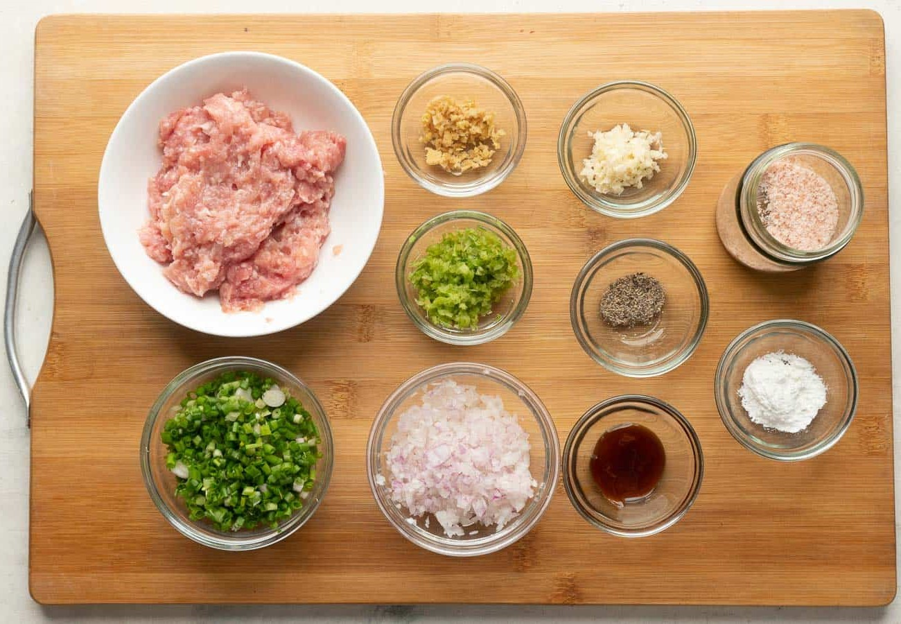
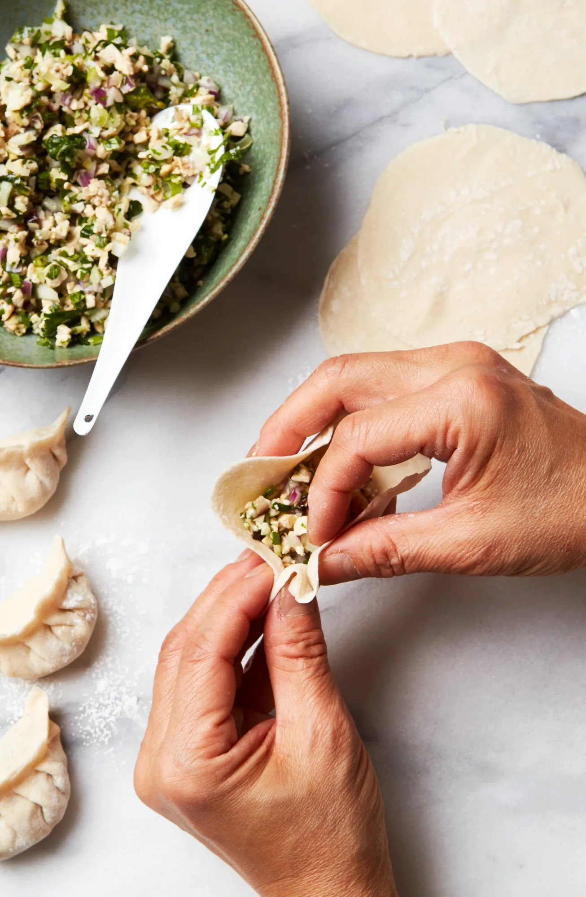

Tasty Mo: Mo: Recipe
for Dumpling Lovers
Mo: Mo: are steamed dumplings stuffed with a lightly spiced meat filling. A popular Nepalese recipe and also a popular Nepalese street food.
Prep. Time
30 minutes
Cook Time
1 Hour
Total Time
1 Hour 30 Minutes
Servings
50 Pieces

Ingredients
- 4 cups all-purpose flour
- 2 1/2 pounds ground chicken thighs
- 1 cup chopped fresh cilantro
- 1 cup chopped onions
- 4 tablespoons minced garlic
- 4 tablespoons minced peeled ginger
- 2 tablespoons ground cumin
- 1 teaspoon ground cinnamon
- Salt and black pepper
- Nonstick cooking spray
Procedures
- Mix together the flour and 1 1/2 cups room temperature water in a bowl. Knead the dough well until it is medium-firm and flexible. Cover and let rest for 1 hour.
- Meanwhile, mix together the chicken, cilantro, onions, garlic, ginger, cumin, cinnamon, 2 tablespoons salt and 1/2 teaspoon pepper in a bowl.
- To make the wrappers: Break off 1/2 ounce of dough and forming it into a ball. Place the ball on a flat surface and roll it into a 4-inch round with a rolling pin. Repeat with the remaining dough.
- Spray a steamer pan with cooking spray.
- Place a tablespoon of the chicken filling in the middle of a wrapper. Holding the wrapper in your left hand. Use your right thumb and index finger to start pinching the edges of the wrapper together. Pinch and fold until the edges of the circle close up like a little satchel. Place the momo in the prepared steamer pan. Repeat with remaining wrappers and filling.
- Fill the steamer pot halfway with water and bring to a boil. Set the steamer pan with the momos on top of the pot and cover with a tight lid. Steam the momos until cooked, 8 to 9 minutes.

Nutritions
Calories: 224kcal | Carbohydrates: 27g | Protein: 7g | Fat: 9g | Saturated Fat: 6g | Polyunsaturated Fat: 1g | Monounsaturated Fat: 2g | Trans Fat: 0.2g | Cholesterol: 27mg | Sodium: 546mg | Potassium: 175mg | Fiber: 1g | Sugar: 5g | Vitamin A: 339IU | Vitamin C: 0.003mg | Calcium: 125mg | Iron: 0.3mg